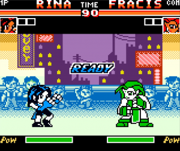

Queen Fighter 2000 es un juego de lucha bootleg desarrollado por Vast Fame para la Game Boy Color[cite: 5]. Utiliza una versión modificada del motor de lucha de Takara usado en sus juegos de The King of Fighters, aunque con controles y mecánicas simplificadas[cite: 5].
El juego ofrece una variedad de opciones para el modo de un jugador y también incluye funcionalidad multijugador[cite: 5]:
- 01 // 1v1Batallas Individuales (One-on-One) contra IA o rival
- 02 // EQUIPOSBatallas por Equipos (formato similar a KOF)
- 03 // MULTIJUGADORSoporte para partidas entre dos jugadores
- 04 // EXTRASOpciones de dificultad y prueba de sonido (Sound Test)
El sistema de combate está inspirado en el título SNK Gals' Fighters de Neo Geo Pocket Color[cite: 5]. A pesar de la base sólida del motor, la ejecución de movimientos especiales puede ser complicada, y el juego es conocido por su alta dificultad, con enemigos que responden de forma impredecible[cite: 5].
